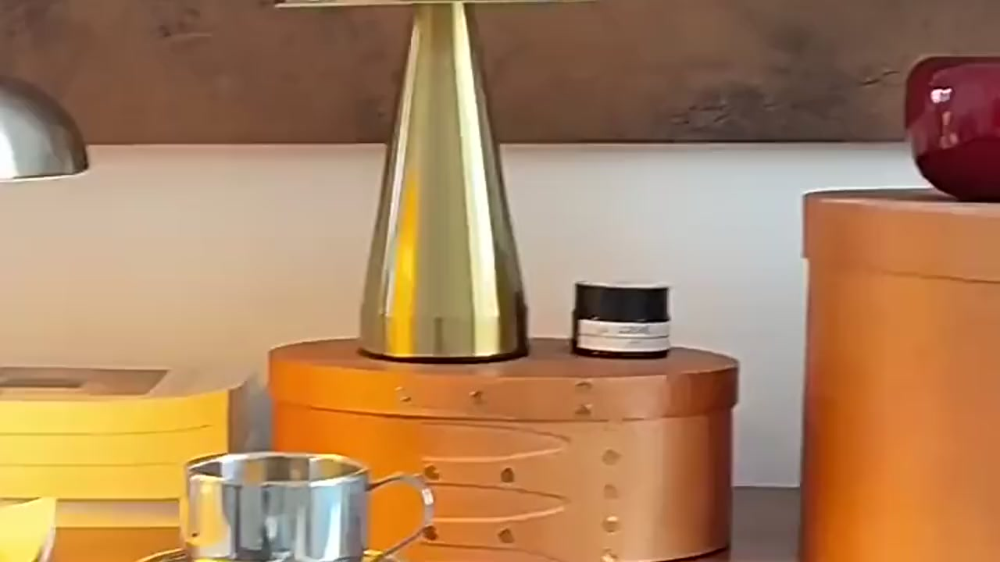
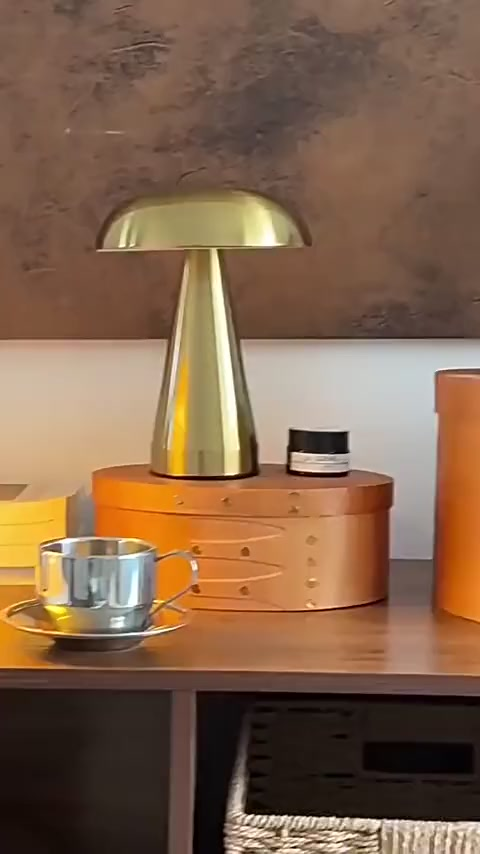

01
소재의 결까지
보고 고릅니다.
빛의 방향에 따라 달라지는 스테인리스의 표정과 공간에 놓였을 때의 균형을 함께 살핍니다.
SILVER MOON · SELECTED OBJECTS
보이는 아름다움과 쓰이는 이유가 같은 스테인리스 오브제를 고릅니다.
선택의 기준 보기
01
빛의 방향에 따라 달라지는 스테인리스의 표정과 공간에 놓였을 때의 균형을 함께 살핍니다.
02
매일 손이 가는 기능과 오래 보아도 편안한 형태가 자연스럽게 겹치는 물건을 선택합니다.

03
흔하지 않은 인상은 남기면서도 주방, 거실, 캠핑의 장면에 조용히 스며드는 디자인을 찾습니다.
CURRENT SELECTION
상품 정보를 확인하고 있습니다.
JOURNAL
최신 이야기를 불러오는 중입니다.
SILVER MOON
새로운 스마트스토어 셀렉션과 실버문의 다음 이야기를 준비하고 있습니다.